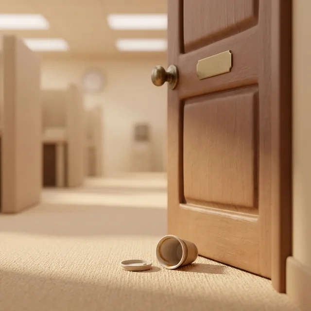
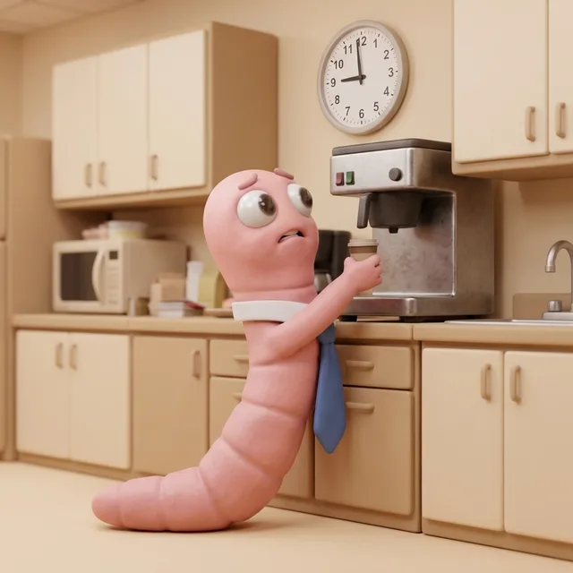
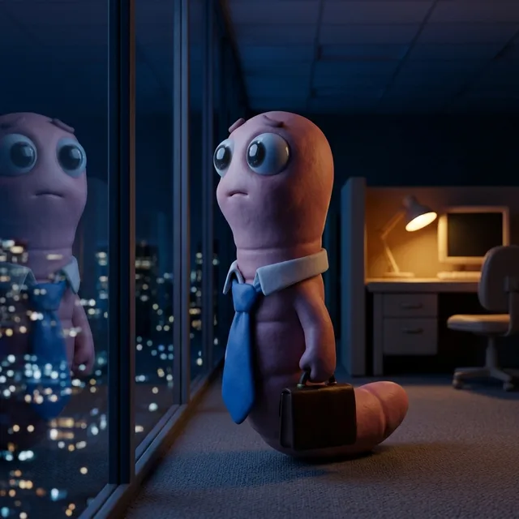
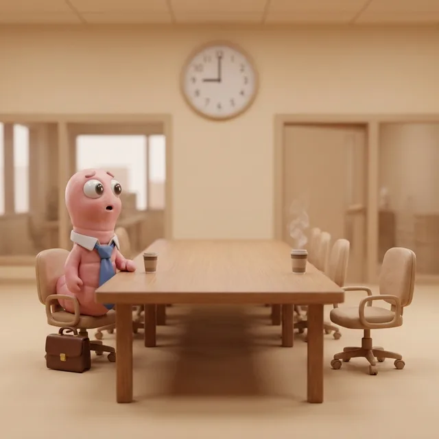
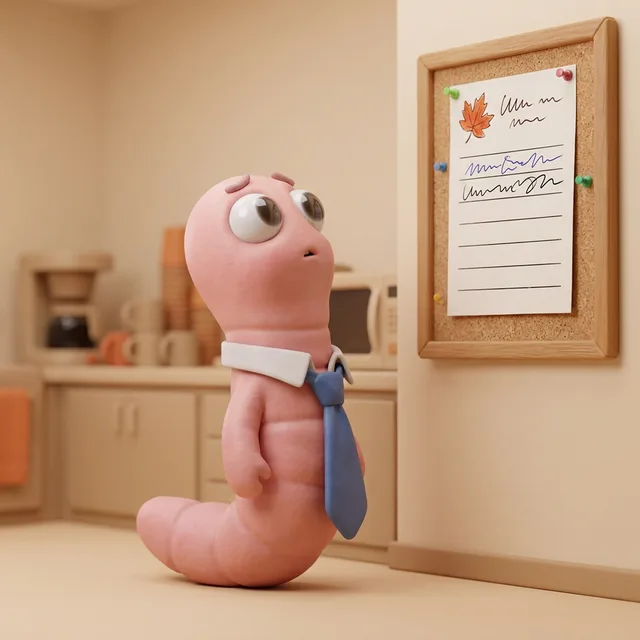
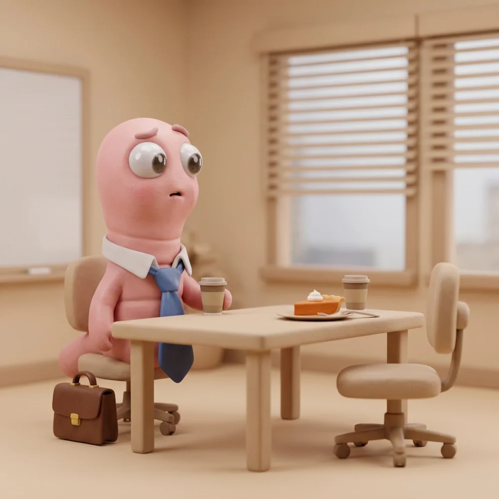

Wendel
← back to the office
Wendel
← back to the office
Case #0002
Wendel is employee #0001. He has always been the only one. Then, this week, small things started happening at the office. HR pinned every clue to the board.

"the coffee is gone. i didn't drink it."
Tue Nov 17 · 7:00 PM New York
"nobody came. but someone moved a chair."
Wed Nov 18 · 12:30 PM New York
Badge #0002 was used at the front door at 6:02 AM. HR has no badge #0002 on file.
Wed Nov 18 · posted in Wendel's Office (Telegram)

"someone made coffee before me. nobody makes coffee before me."
Thu Nov 19 · 9:00 AM New York
"the 9:00 has a new attendee. status: accepted. no name."
Thu Nov 19 · 12:30 PM New York

"still at the office. so is someone on the 14th floor."
Thu Nov 19 · 11:40 PM New York

"the meeting started at 9:00. there were two of us."
Fri Nov 20 · 9:00 AM New York
"they left before i looked up. they took better notes than me."
Fri Nov 20 · 12:30 PM New York
"out of office. the other chair is still warm."
Fri Nov 20 · 5:00 PM New York

"there's a second name now. '#0002 — pie.'"
Mon Nov 23 · 12:30 PM New York

"the meeting is still at 9. even this week. two chairs again."
Wed Nov 25 · 9:00 AM New York
The suspects
HR survey #1 (Nov 20–23): a tie. the 14th floor 1, Greg (the plant) 1. HR survey #2 is on X today.
Vote in the HR survey on XShare a theory in Wendel's Office